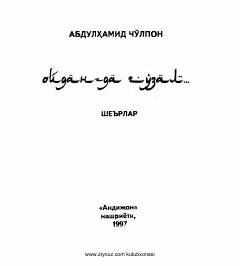

OGAbdulhamid Cho'lponning milliy uyg'onish va erk ruhidagi mashhur she'rlari to'plami.
Mazkur to'plamga buyuk o'zbek shoiri va jadid adabiyoti namoyandasi Abdulhamid Cho'lponning mashhur lirik hamda ijtimoiy-siyosiy mavzudagi sara she'rlari kiritilgan. Kitobda muallifning erk, ozodlik va xalqparvarlik g'oyalari bilan sug'orilgan otaqin asarlari jamlangan.